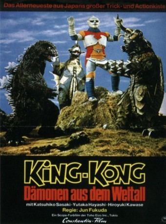

#12015 King Kong - Dämonen aus dem Weltall
Alternativ: Godzilla vs. Megalon (Englischer Titel)
 
 IMDB-Wertung: 4.7 / 10
IMDB-Wertung: 4.7 / 10  Tomatometer: 38
Tomatometer: 38  Metascore: 0
Metascore: 0 
"Wenn ein schwarzer Berg über den Wolken am Himmel erscheint, wird ein riesiges Ungeheuer auftauchen und versuchen, die Welt zu zerstören. Wenn aber der rote Mund untergegangen ist und die Sonne im Westen aufgeht, dann werden zwei weitere Ungeheuer erscheinen und die Menschheit retten." So lautete die uralte Weissagung aus einer Höhle auf Okinawa, und so wird es geschehen. Japans Monster Ikone Godzilla im Kampf mit seinem titanstählernden Ebenbild. Ein farbenprächtiger Taumel der Vernichtung.
Jahr: 1973
Dauer: 81 Minuten
FSK: 12
Land: Japan Studio: i-catcher mediaTonspuren:
Untertitel: Deutsch,
Auflösung: 1080p (1920x784) Größe: 6717 MB
Genre: Action, Sci-Fi, Abenteuer, Familie
Regisseur: Jun Fukuda
Drehbuch: Jun Fukuda, Takeshi Kimura, Shin'ichi Sekizawa
Soundtrack: Riichirô Manabe
Darsteller:
- Kenpachirô Satsuma als Gaigan
- Haruo Nakajima als Gojira (archive footage) (uncredited)
- Katsuhiko Sasaki als Inventor Goro Ibuki
- Hiroyuki Kawase als Rokuro 'Roku-chan' Ibuki
- Yutaka Hayashi als Hiroshi Jinkawa
- Robert Dunham als Emperor Antonio of Seatopia / Motorcycle assailant
- Kôtarô Tomita als Lead Seatopian Agent
- Ulf Ôtsuki als Seatopian Agent
- Gentaro Nakajima als Truck Driver
- Sakyo Mikami als Truck Driver's Assistant
- Fumiyo Ikeda als Man from Unit 1
- Kanta Mori als Japan Special Defense Forces Chief
- Shinji Takagi als Gojira
- Hideto Odachi als Megaro
- Tsugutoshi Komada als Jetto Jagâ
- Ralph Jesser als Antonio's Aide (Radio Operator in White)
- Eisuke Nakanishi als Asuka Island Nuclear Test (Narrator)
- Chris Hilton als Inventor Goro Ibuki (uncredited)
- Warren Rooke als Hiroshi Jinkawa (uncredited)
- Ted Thomas als Emperor Antonio of Seatopia / Narrator / Radio Announcer (uncredited)
Datei: X:\7+mehr(A-Z)\Godzilla\King Kong - Dämonen aus dem Weltall (1973, FSK12, 1920x784).mkv seit 11.11.2019
Festplatte: HD Collection-7+mehr(A-Z)+Person
 Es gibt insgesamt 13 Filme in der Gruppe '7+mehr(A-Z)\Godzilla'
Es gibt insgesamt 13 Filme in der Gruppe '7+mehr(A-Z)\Godzilla'